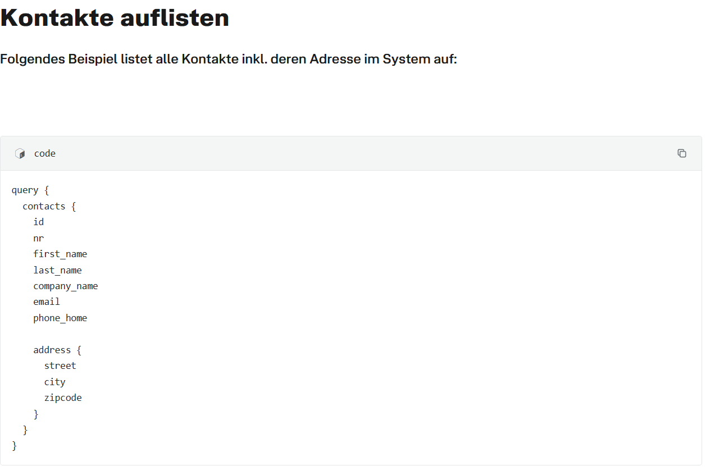
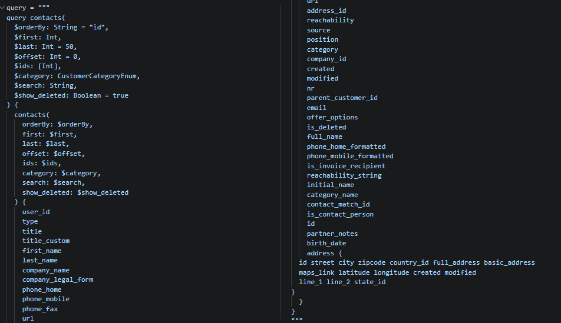

Fallstudie · API-Analyse
Eine API verstehen, die kaum erklärt wurde
Mein erster Kontakt mit einer Programmierschnittstelle führte direkt zu GraphQL. Ich wollte Kontaktdaten aus unserer CRM-Software HERO abrufen, hatte bis dahin aber weder mit APIs noch mit GraphQL gearbeitet. Die Dokumentation zeigte nur wenige Beispielabfragen — welche Abfragen, Parameter und Felder es wirklich gibt, stand nirgends. Die Lösung: die Schnittstelle nicht länger über einzelne Beispiele erraten, sondern die API sich selbst beschreiben lassen.
- GraphQL
- Introspection
- Python
- pandas
- requests
- Rekursion
- Pagination
Diese Fallstudie zeigt den Weg im Detail: vom ersten Rätselraten über die Introspection-Abfrage, mit der sich eine GraphQL-API selbst dokumentiert, bis zu einem kleinen Generator, der aus den Schema-Metadaten fertige Query-Strukturen ableitet. Sie zeigt außerdem, wie sich die Zusammenarbeit mit ChatGPT damals anfühlte — vor Werkzeugen wie Codex und Claude Code, als jeder Codeausschnitt noch von Hand in den Chat kopiert werden musste.

1. Die Dokumentation reichte nicht aus
Die Oberfläche von HERO war mir aus dem Arbeitsalltag bekannt. Dort konnte ich Kontakte, Projekte, Termine und Dokumente öffnen und bearbeiten. Hinter dieser Oberfläche musste also bereits ein strukturiertes Datenmodell existieren. Die API-Dokumentation zeigte davon jedoch nur einzelne Ausschnitte — etwa eine Kontaktabfrage mit einigen ausgewählten Feldern:

Diese Abfrage beantwortet eine konkrete Frage: Gib mir Kontakte mit ID, Name,
E-Mail und Adresse. Sie beantwortet aber nicht die viel wichtigere Frage:
Welche weiteren Fragen darf ich der API überhaupt stellen? Ich konnte
Beispiele verändern, Felder ergänzen und auf Fehlermeldungen reagieren — aber
das blieb ein Blindflug. Bei jedem Versuch musste ich raten, ob ein Feld nun
phone, phone_number, mobile oder
phone_mobile heißt.
„Die Dokumentation zeigt nur wenige Beispielabfragen. Woher soll ich wissen, welche Felder ein Kontakt wirklich besitzt?"
Eigene Chatnachricht an ChatGPT, sinngemäß rekonstruiertDie Antwort war der entscheidende Hinweis: Bei einer GraphQL-API kann das Schema häufig über die sogenannte Introspection abgefragt werden. Dabei fragt man die API nicht nach Kontakten, sondern nach ihrer eigenen Struktur — man fragt also die API per API, welche API-Abfragen überhaupt möglich sind. Die Antwort ist allerdings umfangreich und stark verschachtelt und muss anschließend aufbereitet werden. Genau das wurde der Kern dieses Projekts.
2. Was GraphQL anders macht
Bei einer klassischen REST-API gibt es häufig verschiedene Adressen für
verschiedene Ressourcen: /contacts, /projects,
/calendar-events. GraphQL arbeitet dagegen meist mit einem einzigen
zentralen Endpunkt. Welche Daten zurückkommen, bestimmt nicht die URL, sondern
die Query im Request — der Client beschreibt selbst, welche Informationen er
benötigt:
query {
contacts(last: 5) {
id
full_name
email
}
}Die Antwort enthält anschließend genau diese Felder — nicht mehr und nicht weniger. Das ist flexibel, setzt aber voraus, dass man die Namen und Strukturen kennt. Ohne vollständige Dokumentation fehlt genau dieses Wissen.
Dafür besitzt GraphQL ein eingebautes Metasystem: die Introspection. Über
besondere Abfragen wie __schema und __type liefert die
API Informationen über sich selbst — verfügbare Queries und Mutations,
Objekttypen, Eingabeparameter, Rückgabetypen, verschachtelte Felder, Pflichtfelder
und Enums. Die Introspection ist dabei keine Umgehung der API, sondern ein
vorgesehener Bestandteil von GraphQL.
3. Die API nach ihrem eigenen Aufbau fragen
Für den ersten vollständigen Schemaabruf verwendete ich die Python-Bibliotheken
gql und graphql-core. Die Zugangsdaten lagen nicht im
Notebook, sondern in einer getrennten config.py — dadurch konnte ich
das Notebook später bearbeiten oder veröffentlichen, ohne versehentlich den
echten API-Schlüssel mitzuliefern:
API_URL = "https://api.example.com/graphql"
API_SCHLUESSEL = "DEIN_API_SCHLUESSEL"from gql import Client, gql
from gql.transport.requests import RequestsHTTPTransport
from graphql import get_introspection_query
from config import API_URL, API_SCHLUESSEL
transport = RequestsHTTPTransport(
url=API_URL,
headers={"Authorization": f"Bearer {API_SCHLUESSEL}"},
retries=3,
)
client = Client(
transport=transport,
fetch_schema_from_transport=False,
)
introspection_result = client.execute(
gql(get_introspection_query(descriptions=True))
)
Der RequestsHTTPTransport übernimmt die HTTP-Verbindung, in den
Headern wird der API-Schlüssel übergeben. Die Option
fetch_schema_from_transport=False verhindert, dass der Client schon
beim Start selbstständig das Schema lädt — ich wollte diesen Schritt bewusst
kontrollieren und das Ergebnis anschließend untersuchen.
get_introspection_query() erzeugt eine standardisierte Abfrage, die
das Schema anfordert. Die API antwortet mit einer großen JSON-Struktur; die
Typen liegen unter introspection_result["__schema"]["types"].
„Die Anfrage funktioniert, aber die Antwort ist riesig. Ich sehe verschachtelte Dictionaries, Listen und überall ofType. Das ist keine Dokumentation, mit der ich arbeiten kann."
Eigene Chatnachricht an ChatGPT, sinngemäß rekonstruiert
Der Rat dazu: die Introspection zunächst als Rohdaten betrachten und die Liste
unter __schema.types in einen Pandas-DataFrame laden. Das Schema
ist selbst ein Datensatz und lässt sich genauso analysieren wie andere
strukturierte Daten. Das war für mich der verständlichere Zugang: Ich musste
GraphQL nicht sofort vollständig begreifen, sondern konnte zunächst das tun, was
ich aus Python und Datenanalyse bereits kannte — JSON-Strukturen in Tabellen
überführen und schrittweise auseinandernehmen.
4. Das rohe Schema lesbar machen
Aus der Typenliste wurde zunächst ein einfacher DataFrame:
import pandas as pd
types = introspection_result["__schema"]["types"]
df_types = pd.DataFrame(types)
Jede Zeile war jetzt ein Typ des Schemas mit seiner Art (kind),
seinem Namen und — bei Objekttypen — einer Liste von Feldern. Damit war noch
keine Kontaktabfrage dokumentiert, aber zum ersten Mal wurde sichtbar, aus
welchen Arten von Bausteinen die API besteht:
OBJECT— ein strukturierter Datentyp mit eigenen Feldern, etwaCustomer,UseroderCalendarEvent.SCALAR— ein einfacher Wert wieString,Int,BooleanoderDateTime.ENUM— eine begrenzte Auswahl erlaubter Werte; ein Feld darf dann nicht irgendeinen Text enthalten, sondern nur einen der definierten Werte.INPUT_OBJECT— eine strukturierte Eingabe, etwa für Filter.LISTundNON_NULL— keine eigentlichen Geschäftstypen, sondern Verpackungen anderer Typen: ausCustomerwird[Customer](Liste) oderCustomer!(Pflichtwert).
Bereits diese erste Tabelle zeigte etwas, das aus der offiziellen Dokumentation nicht hervorging: Die API bestand nicht nur aus Kontakten. Das Schema enthielt zahlreiche weitere Objekte und Einstiegspunkte. Das Problem verschob sich damit — die Informationen waren vorhanden, ich musste sie nur noch aus der verschachtelten Struktur lösen.
5. Die verfügbaren Abfragen finden
Lesende Abfragen beginnen in GraphQL an einem sogenannten Query-Roottyp. Sein Name musste nicht geraten werden — er stand direkt im Schema:
schema = introspection_result["__schema"]
query_root = schema["queryType"]["name"]
mutation_root = schema.get("mutationType", {}).get("name")
Die eigentlichen Felder eines Objekttyps lagen aber weiterhin als Liste innerhalb
einer einzelnen Tabellenzelle. Drei DataFrame-Operationen lösten das auf:
explode() machte aus der Feldliste eine Zeile pro Feld, ein Filter
behielt nur echte Feld-Dictionaries, und apply(pd.Series) zerlegte
diese Dictionaries in einzelne Spalten:
df_exploded = df_types.explode("fields")
df_fields = df_exploded[
df_exploded["fields"].apply(lambda v: isinstance(v, dict))
].reset_index(drop=True)
df_fields = pd.concat(
[
df_fields[["operation", "kind", "name"]],
df_fields["fields"].apply(pd.Series),
],
axis=1,
)
Damit konnte ich erstmals sämtliche Einstiegspunkte der API als normale Tabelle
filtern. Dort tauchten neben contacts unter anderem
user, company, countries,
notifications und calendar_events auf. Das war der
erste wirklich brauchbare Ersatz für die fehlende Dokumentation: statt einzelner
Beispiele eine durchsuchbare Übersicht der verfügbaren Abfragen.
Was hier allgemein übertragbar ist: Viele technische Probleme wirken zunächst wie ein Programmierproblem. Tatsächlich fehlt häufig nur eine geeignete Darstellung. Die Introspection-Antwort war vollständig, aber für Menschen kaum lesbar — drei einfache Operationen machten daraus eine analysierbare Struktur:
- Äußere Liste als Tabelle laden —
pd.DataFrame(...) - Eingebettete Listen in Zeilen aufteilen —
explode(...) - Eingebettete Dictionaries in Spalten auflösen —
apply(pd.Series)
6. Parameter und GraphQL-Typen entschlüsseln
Nachdem klar war, dass es eine Abfrage namens contacts gibt, musste
ich herausfinden, wie sie verwendet wird. Jedes Query-Feld besitzt im Schema ein
Feld args mit den erlaubten Argumenten. Für contacts
enthielt es unter anderem orderBy, first,
last, offset, ids, category,
search und show_deleted. Damit war erstmals eindeutig
geklärt, welche Filter tatsächlich existieren.
Die Typinformationen waren jedoch erneut verschachtelt. Eine Liste von Integern sah im JSON zum Beispiel so aus:
{
"kind": "LIST",
"name": None,
"ofType": {
"kind": "SCALAR",
"name": "Int",
"ofType": None
}
}Der eigentliche Typname stand also nicht immer auf der ersten Ebene.
„Bei einigen Parametern steht unter name einfach None. Bedeutet das, dass der Typ nicht dokumentiert ist?"
Eigene Chatnachricht an ChatGPT, sinngemäß rekonstruiert
Die Erklärung: LIST und NON_NULL sind Wrapper — der
eigentliche Typ liegt jeweils in ofType, und dort kann wieder ein
Wrapper liegen. Die Struktur muss deshalb rekursiv entpackt werden: Eine Funktion
ruft sich selbst so lange erneut auf, bis sie einen benannten Typ erreicht.
Daraus entstand diese kleine Hilfsfunktion:
def gql_type_str(type_info):
if type_info.get("kind") == "NON_NULL":
return f"{gql_type_str(type_info['ofType'])}!"
if type_info.get("kind") == "LIST":
return f"[{gql_type_str(type_info['ofType'])}]"
return type_info.get("name")
Der Code wirkt klein, für mein Verständnis von GraphQL war er aber entscheidend.
Zum ersten Mal wurde klar, dass Ausdrücke wie [Int!]! keine
willkürliche Syntax sind, sondern ineinander verschachtelte Regeln:
Int ist ein Integer, Int! darf nicht leer sein,
[Int!] ist eine Liste solcher Integer, und bei [Int!]!
darf auch die Liste selbst nicht fehlen. Angewendet auf alle Argumente entstand
eine Übersicht, die die Dokumentation nie geliefert hatte — inklusive
Standardwerten wie orderBy = "id", last = 50 und
offset = 0. Diese drei Werte wurden später noch wichtig.
7. Den tatsächlichen Rückgabetyp bestimmen
Die Eingabeparameter erklärten, wie ich contacts aufrufen kann. Noch
offen war, was genau zurückkommt. Auch hier war der Typ verpackt — eine Liste von
Customer-Objekten. Zum Entpacken genügte eine zweite rekursive
Funktion:
def unwrap(type_info):
if type_info and type_info.get("kind") in {"NON_NULL", "LIST"}:
return unwrap(type_info["ofType"])
return type_info.get("name")
Mit dem Ergebnis Customer konnte ich im Schema alle Felder suchen,
die zu diesem Typ gehören. Dabei unterschied ich zwei Arten:
- Einfache Felder — direkt abfragbare Werte wie
id,first_name,last_name,email,phone_mobile,createdodermodified. - Komplexe Felder — Felder, die weitere Objekte enthalten. Ein
address-Feld allein wäre ungültig; GraphQL verlangt dann eine konkrete Auswahl von Unterfeldern wiestreet,zipundcity.
Für die erste funktionierende Abfrage beschränkte ich mich bewusst auf einfache Felder. Das war keine technische Einschränkung, sondern eine Lernentscheidung: erst einen stabilen Abruf bauen, danach Verschachtelungen ergänzen.
8. Aus Metadaten eine Query erzeugen
Namen, Typen, Standardwerte und Argumente lagen jetzt als DataFrame vor — die
Query musste ich also nicht mehr von Hand schreiben. Aus jeder Argumentzeile wie
last | Int | 50 ließ sich eine Variablendefinition wie
$last: Int = 50 zusammensetzen, und aus den einfachen
Rückgabefeldern der Auswahlblock. Alle Bausteine zusammen ergaben ein
Query-Skelett:
query_skeleton = f"""
query{var_defs_str} {{
{query_to_extract}{arg_pass_str} {{
{simple_fields_str}
}}
}}
"""
Das Ergebnis war keine hart codierte Kontaktabfrage mehr. Dasselbe Verfahren
funktionierte auch für andere Einstiegspunkte: Ein Test mit
calendar_events erzeugte automatisch eine Abfrage mit Parametern wie
$start: DateTime und $end: DateTime und Rückgabefeldern
wie title, start und end. Damit hatte ich
nicht nur eine einzelne API-Abfrage gebaut, sondern einen kleinen Generator, der
aus dem Schema erste Query-Strukturen ableitet.
9. Die erste echte Kontaktabfrage
Das generierte Query-Skelett erklärte die GraphQL-Seite. Für einen echten Datenabruf fehlten noch der HTTP-Request, die Fehlerbehandlung und die Umwandlung in einen DataFrame. An dieser Stelle nutzte ich ChatGPT erneut — diesmal mit einer eng begrenzten Aufgabe:
„Ich habe diesen generierten GraphQL-Query. Erstelle daraus ein vollständiges
Python-Skript mit requests.post(), Authorization-Header,
Fehlerbehandlung und Ausgabe als Pandas-DataFrame. API_URL und
API_SCHLUESSEL liegen bereits in einer config.py."
Dieser Unterschied war wichtig: Ich übergab eine bereits untersuchte Query und einen klar definierten nächsten Schritt — dadurch konnte ich die Antwort wesentlich besser prüfen. Die fertige Abfrage enthielt alle Parameter aus dem Schema und deutlich mehr Felder, als die Dokumentation je gezeigt hatte:

address-Block — der Kontrast
zur Beispielabfrage aus Abbildung 2. Das Original ist ein langer schmaler
Screenshot, hier zweispaltig montiert.
Eigene Darstellung.
Ein Detail der Fehlerbehandlung ist typisch für GraphQL: Ein HTTP-Status 200 bedeutet nicht automatisch, dass die Query erfolgreich war — GraphQL-Fehler stehen innerhalb der JSON-Antwort. Deshalb prüfte das Skript beide Ebenen:
response = requests.post(
API_URL,
headers=headers,
json={"query": query},
timeout=30,
)
response.raise_for_status()
payload = response.json()
if "errors" in payload:
raise RuntimeError(f"GraphQL-Fehler: {payload['errors']}")
contacts_df = pd.json_normalize(payload["data"]["contacts"])Damit war der erste vollständige Weg aufgebaut:
- GraphQL-Schema — per Introspection abgerufen und analysiert.
- Query-Struktur — aus den Schema-Metadaten erzeugt.
- HTTP-Anfrage — mit Fehlerprüfung auf beiden Ebenen.
- Pandas-DataFrame — die Kontakte als auswertbare Tabelle.
Die API war zu diesem Zeitpunkt noch nicht vollständig dokumentiert. Sie war aber keine Blackbox mehr.
10. Mehr als 50 Datensätze abrufen
Die erste Abfrage lieferte standardmäßig 50 Kontakte. Für Tests reichte das, für
einen vollständigen Export nicht. Im Schema hatte ich bereits die beiden
entscheidenden Parameter gefunden: last bestimmte die Größe eines
Datenblocks, offset gab an, wie viele Datensätze vorher übersprungen
werden — Block eins beginnt bei 0, Block zwei bei 50, Block drei bei 100. Die
Dokumentation erklärte allerdings nicht, wann das Ende erreicht ist. Also
verwendete ich das Verhalten der API selbst als Abbruchsignal: Sobald eine Seite
keine Kontakte mehr enthält, sind alle Datensätze geladen.
all_contacts = []
offset = 0
page_size = 50
while True:
variables = {"last": page_size, "offset": offset}
payload = graphql_abruf(query, variables)
batch = payload["data"]["contacts"]
if not batch:
break
all_contacts.extend(batch)
offset += page_size
df_all = pd.json_normalize(all_contacts)
Der Export als CSV nutzte die Kodierung utf-8-sig — bewusst, damit
Umlaute beim Öffnen der Datei in Excel zuverlässig dargestellt werden.
Eine kleine, aber lehrreiche Codekorrektur: In einer frühen
Notebook-Version übergab ich versehentlich first statt
last als Variable. Der Abruf funktionierte scheinbar trotzdem —
weil last in der Query den Standardwert 50 besaß, blieb die
übergebene Variable schlicht wirkungslos. Genau solche Fehler sind bei
generiertem oder schrittweise verändertem Code gefährlich: Das Ergebnis sieht
richtig aus, obwohl eine Variable ins Leere läuft. Funktionierender Code ist
nicht automatisch verstandener Code — erst wenn klar ist, welche Variable wo
wirkt, lässt sich beurteilen, ob ein Test wirklich das belegt, was er belegen
soll.
11. Arbeiten mit ChatGPT vor Codex und Claude Code
Dieses Projekt entstand zu einer Zeit, in der ChatGPT noch nicht auf meine lokalen Projektdateien zugreifen konnte. Der typische Ablauf: Code aus dem Notebook kopieren, in den Chat einfügen, Problem beschreiben, Antwort zurückkopieren, lokal ausführen, Fehlermeldung wieder in den Chat kopieren. Am Anfang funktionierte das gut. Mit zunehmender Länge sammelten sich im Chat aber immer mehr Codeversionen, Erklärungen und bereits verworfene Ansätze — irgendwann wusste das Modell nicht mehr zuverlässig, welche Version aktuell war.
„Der Code funktioniert nicht mehr. Du beziehst dich auf eine Variable, die wir vor mehreren Versionen entfernt haben."
Eigene Chatnachricht an ChatGPT, sinngemäß rekonstruiertDieses Problem gehörte genauso zum Projekt wie GraphQL selbst. Ich musste nicht nur lernen, wie eine API funktioniert, sondern auch, wie technische Arbeit mit einem Sprachmodell strukturiert werden muss. Vier Regeln haben sich dabei herausgebildet:
- Kleine Aufgaben statt Gesamtauftrag. Ungeeignet war „Analysiere die gesamte API und baue mir einen vollständigen Export". Besser waren nacheinander kleine Fragen — Schema abrufen, Typenliste in einen DataFrame laden, Wrapper-Typen verstehen, Query erzeugen. Jeder Schritt hatte ein klar sichtbares Ergebnis.
- Aktuellen Stand außerhalb des Chats sichern. Funktionierende Zwischenstände gehörten ins Notebook, nicht nur in den Chatverlauf. Der Chat war Arbeitsraum, das Notebook die verbindliche Dokumentation.
- Nur relevanten Kontext übergeben. Für die rekursive Typauflösung musste ChatGPT nicht den vollständigen Kontaktabruf kennen. Je kleiner der übergebene Ausschnitt, desto präziser die Antwort.
- Ergebnisse gegen die API prüfen. ChatGPT konnte vermuten, wie eine GraphQL-API normalerweise funktioniert. Verbindlich waren nur das tatsächliche Schema, die echte Antwort und die auftretenden Fehlermeldungen. Die KI formulierte Hypothesen — die API entschied, ob sie stimmten.
Heute ist der Ablauf einfacher: Werkzeuge wie Codex und Claude Code greifen direkt auf die Projektdateien zu und sehen selbst, welche Funktionen existieren und wie Dateien zusammenhängen. Viele Kopier- und Erklärschritte entfallen. Die grundlegende Arbeitsweise bleibt aber dieselbe:
- Problem begrenzen
- Aktuellen Zustand untersuchen
- Kleinste Änderung vornehmen
- Ergebnis ausführen und real prüfen
- Nächsten Schritt ableiten
Ein leistungsfähigeres Werkzeug ersetzt diese Struktur nicht. Es reduziert nur die Reibung zwischen den einzelnen Schritten.
12. Was andere übernehmen können
Dieses Projekt ist keine universelle Dokumentation für jede GraphQL-API — Schemas, Authentifizierung und Paging unterscheiden sich von Anbieter zu Anbieter. Der Ablauf lässt sich trotzdem übertragen:
- Prüfen, ob Introspection verfügbar ist — mit
get_introspection_query()das Schema anfragen. Einige Anbieter deaktivieren die Introspection in produktiven Umgebungen; dann bleiben nur Dokumentation, Fehlermeldungen oder offizielle Schema-Dateien. - Das Schema als Datensatz behandeln — die Antwort nicht als verschachteltes JSON lesen, sondern relevante Listen in DataFrames umwandeln und schrittweise normalisieren.
- Zuerst den Query-Roottyp finden — seine Felder bilden die lesenden Einstiegspunkte.
- Eine einzelne Abfrage auswählen — nicht sofort das gesamte Schema dokumentieren, sondern für eine konkrete Query Argumente, Typen, Standardwerte und Rückgabefelder bestimmen.
- Mit skalaren Feldern beginnen — verschachtelte Objekte einzeln ergänzen, wenn der einfache Abruf steht.
- Den kleinsten echten Abruf testen — erst wenige Datensätze wie
contacts(last: 5), dann Pagination und vollständige Exporte. - Fehler auf zwei Ebenen prüfen — HTTP-Status und
errors-Feld in der JSON-Antwort. - Paging empirisch testen — nicht annehmen, dass
first,lastoderoffsetüberall gleich funktionieren; mit kleinen Seiten die zurückgegebenen IDs vergleichen, erst danach die Schleife bauen. - Eigene Dokumentation parallel aufbauen — pro Abfrage Rückgabetyp, Parameter, Standardwerte, Felder und Paging-Verhalten festhalten. Diese Notizen werden zur Grundlage aller späteren Skripte.
Aus einer kaum erklärten Schnittstelle entstand so schrittweise eine eigene technische Arbeitsgrundlage: das vollständige Schema, rekursiv aufgelöste Typen, automatisch erzeugte Query-Strukturen und ein vollständiger Kontaktexport. Das Projekt war damit mehr als mein Einstieg in GraphQL — es veränderte meine Art, neue technische Themen zu lernen. Ich musste die API nicht zuerst vollständig theoretisch verstehen. Ich begann mit einem realen System, untersuchte dessen beobachtbares Verhalten und zerlegte es so lange, bis aus einzelnen Antworten ein nachvollziehbares Modell entstand.
Und aus der einzelnen Kontaktabfrage wurde später mehr: Auf genau diesem Schema-Wissen bauen die CRM-Sync-Bibliothek und die Lead-Automation auf, die dieselbe API heute produktiv nutzen.